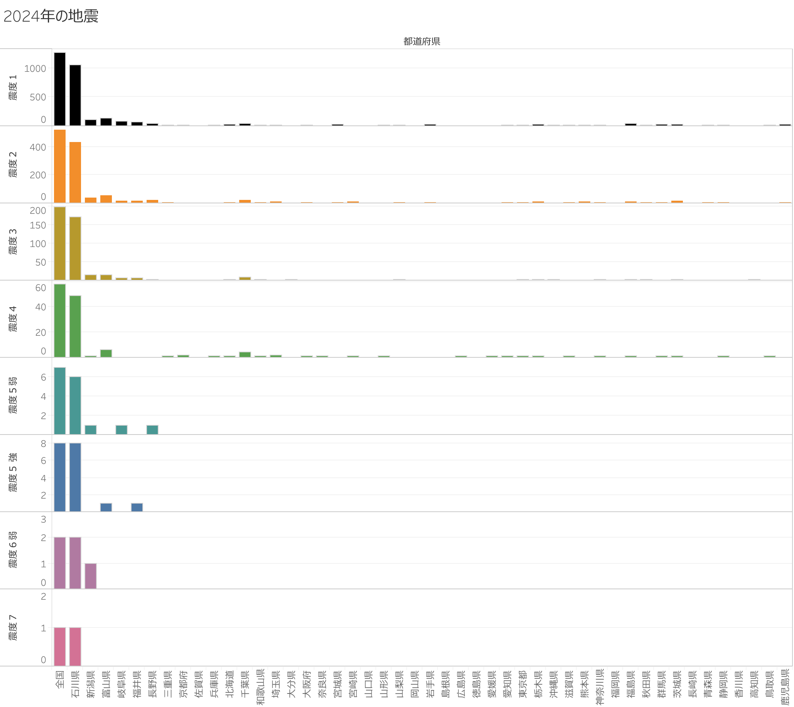
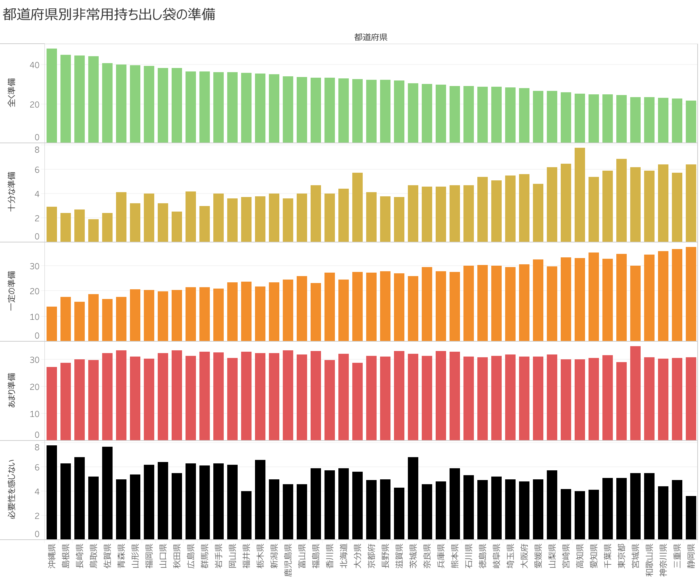

2024年の県別地震件数概要


このページは、アップロード画像で示された2024年に日本国内で観測された地震件数を都道府県別・震度別に集計した表の説明です。
各列の説明
-
最初のグラフ「2024年の地震」は、2024年に日本全国の都道府県で発生した地震の数を震度別に示しており、震度1や2などの低い震度の地震が最も頻繁に発生している一方で、最高震度である震度7の地震は発生していないことを明らかにしています。
-
2番目のグラフ「都道府県別非常用持ち出し袋の準備」は、各都道府県における非常用持ち出し袋の準備状況を「全て準備」から「必要性を感じない」まで5段階で示しています。これにより、地域ごとの防災意識や準備状況に差があることが見て取れ、一部では準備が不十分な住民もいることが示唆されています。
参考文献
Japan Meteorological Agency